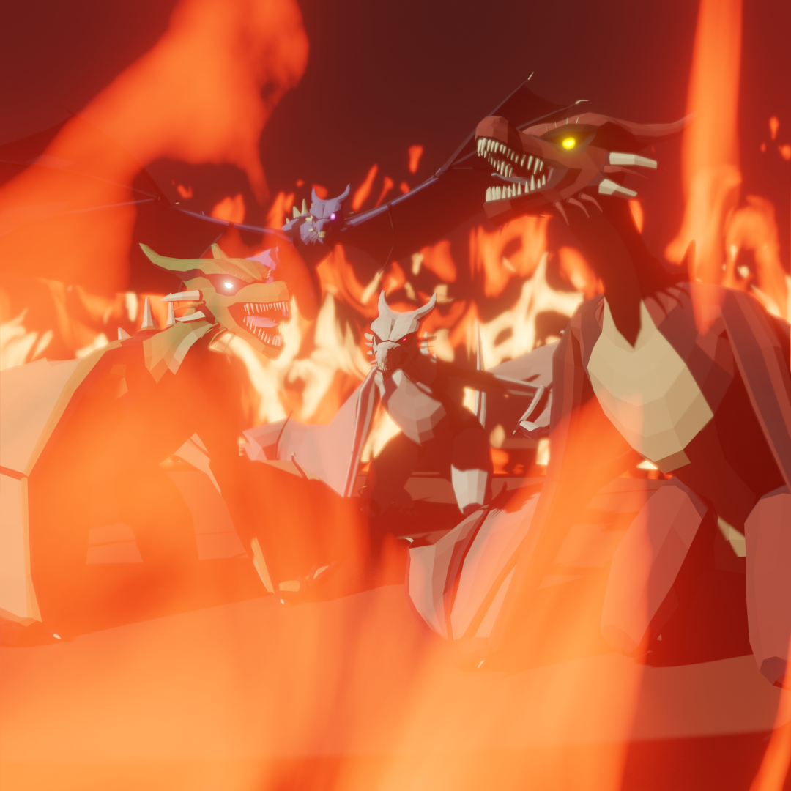
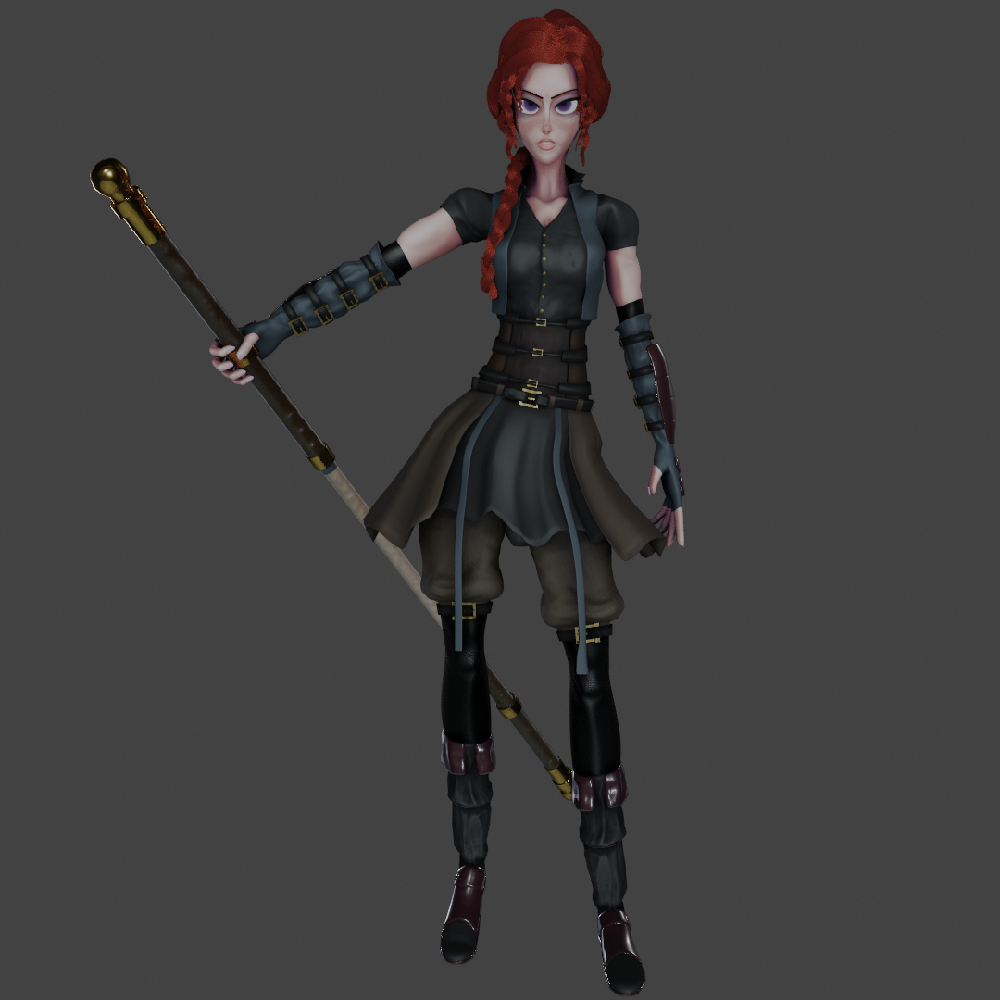
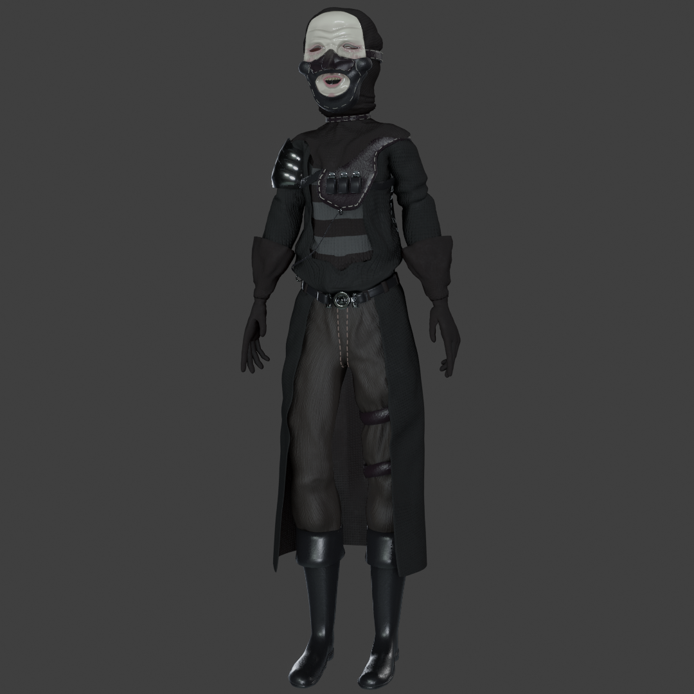
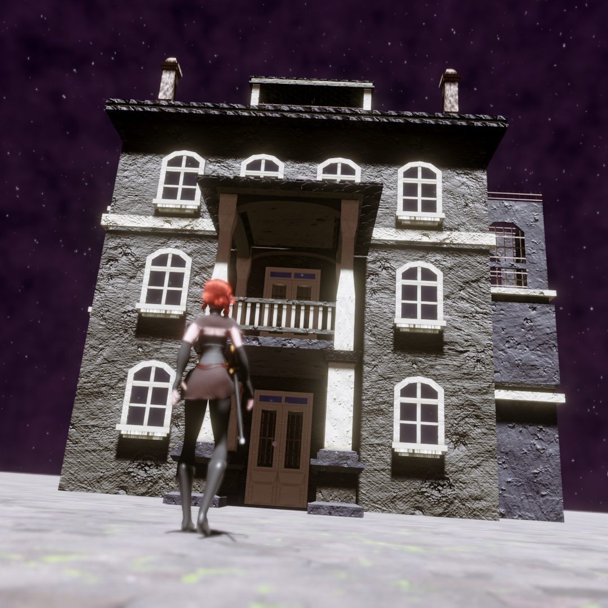
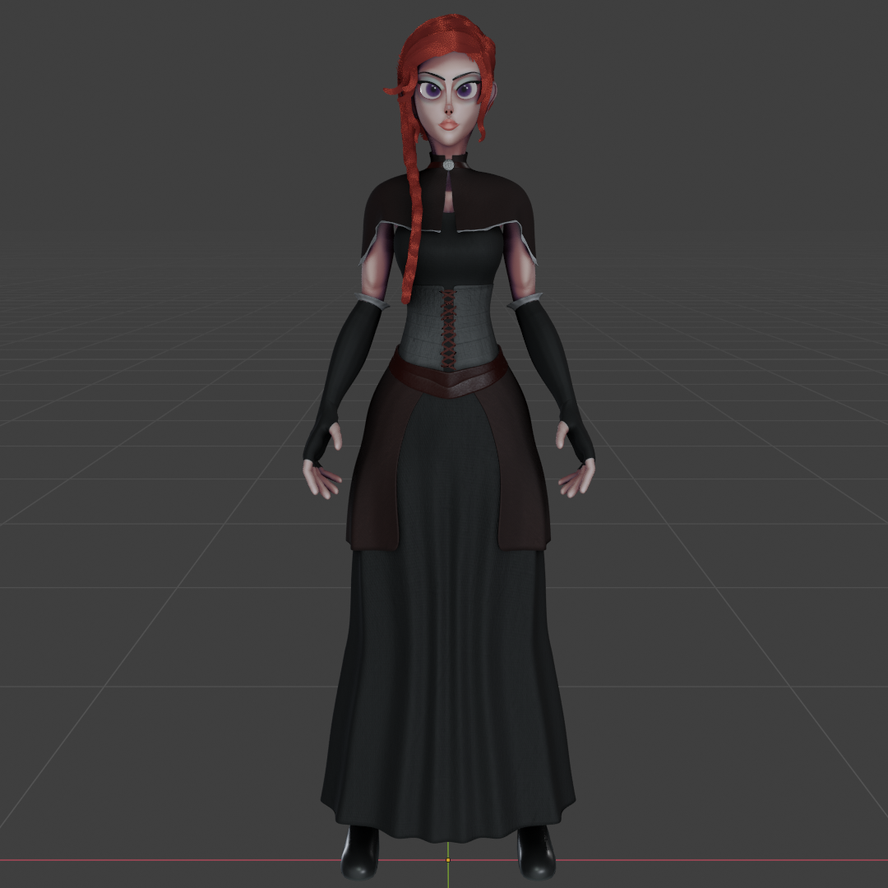
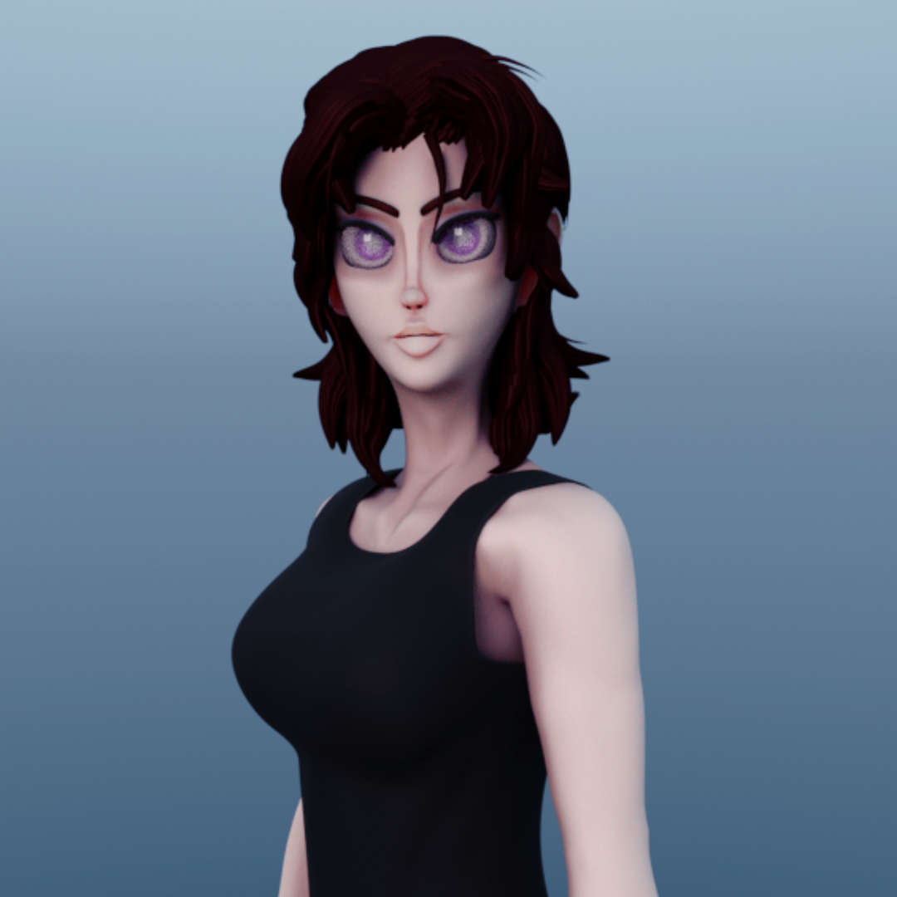

Unfortunately, I have decided to put on hold the development of my game, as I don't think I can keep on working on it with the PC I'm using currently. I'll focus on finding my style and I'll keep on practicing so that the models used in the model are the best I can do. The following couple of months I'll be uploading only models and animations, but as soon as I'm able to get a new computer, I'll start working on the game again. Stay tuned for it.
May 3rd, 2021

April 7th, 2021

Well, here it is: the new redesign for my main character. I'll take this one as the final one with maybe a few tweaks here and there. I'm pretty satisfied with the result.
April 5th, 2021

I designed a new character (or group of) for my game. This is the model I'll be using for a group of enemies. I know the color palette looks similar to the main character's, but I'm in the process of re-designing her. I really liked this one, particularly the mask.
March 5th, 2021
Well, I spent the last week creating a new rig, as the previous one had a lot of issues. I also thought it would be nice to re-make the animations, and so I did. I'm done with the movement ones, so I decided to showcase them in a different way Also, I made some proper boots for my character (finally), which you can see at the very beginning of the video.
February 10th, 2021
So here it is: the redesign for my main character. I might add some more detail when I properly learn how to use a texture painting software, but this is what I'll be working with by now. Also, I've been working on some quarterstaff animations, which have been harder to do than I expected. Still, it has been fun making them.
January 29th, 2021

This is my first time ever modelling a building. It was quite fun and I like the result. It had me thinking what a dread it's going to be to model an entire town. Anyway, I hope you like it!
January 6th, 2021
So, I've been working on some animations. Here's what I've done so far. This is my first time seriously animating anything, so it will probably only work as a record of how my skill evolves.
December 30th, 2020

So I made the first outfit for my game, and I ended up liking it a lot. I think I might try animating a walk cycle during the next week and see how it looks in RPG Maker. I'm actually really excited, as this would be the first time I animate anything.
December 28th, 2020

I started developing a game with RPG Maker in order to force myself to do things I wouldn't. usually do, so I've been working on a base female body, a few hairstyles and color palettes. This might cause a very slight change in the things I upload, but I hope it's for the better. I hope you like it.